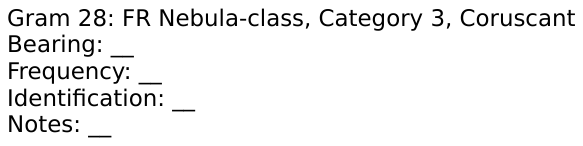

Gram 39 - FR Nebula-class, Category 3, Coruscant
Source provenance (debug):
Source publication: main
Source chapter (deck): Instructor Pub10_Ed22B_Updated
Source gram number: 28
Published as: Week 2 / gram 39
Analysis image source: Instructor Pub10_Ed22B_Updated/Instructor Pub10_Ed22B_Updated Files/Pub 10_Ed 2_(21-30)/Gram_28/Analysis Sheet.png
Analysis Sheet

Lofar 1
 |
|
| time-start | 0 |
| time-end | 180 |
| freq-start | 0 |
| freq-end | 400 |
Lofar 2
Lofar 3
Lofar 4
 |
|
| time-start | 0 |
| time-end | 271 |
| freq-start | 0 |
| freq-end | 400 |